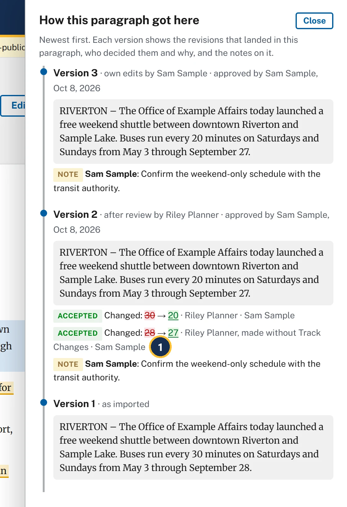
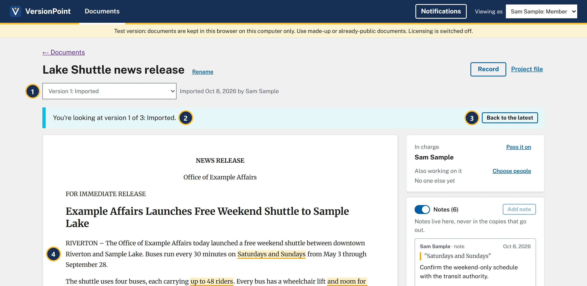

Lesson 86 minutesThe Lake Shuttle, version 3
The record
Answer why does this line read this way? from the paragraph history, older versions and the record.
Why it matters
Sooner or later someone asks why a line reads the way it does. The record answers with names, dates, the reviewer's note and your reason, without anyone digging through email.
Watch
![The document page for version 3 with the buses paragraph selected and the How this paragraph got here panel open on the right. Callout 1 marks the selected paragraph: The shuttle uses four buses, each carrying up to 40 riders. Every bus has a wheelchair lift and room for two bicycles. Callout 2 marks Version 3, own edits by Sam Sample, with No changes to this paragraph in this round. Callout 3 marks Version 2, after review by Riley Planner, approved by Sam Sample. Callout 4 marks Accepted, Changed: 48 changed to 40, Riley Planner, Sam Sample. Callout 5 marks Rejected, Removed: and room for two bicycles, Riley Planner, Sam Sample, with Why: Fleet office confirms the bike racks go on before May 3. Callout 6 marks Riley's two notes: Seated capacity is 40. The 48 counts riders standing. Use the seated number. And: Bike racks are not on the buses yet. Take this out until they are. Callout 7 marks Version 1, as imported, which reads up to 48 riders.](assets/l8-history-a.webp)
- The paragraph you clicked is highlighted.
- Version 3 didn't touch it: No changes to this paragraph in this round.
- Version 2: whose round it was, who approved it and when.
- Accepted: Riley's change from 48 to 40, with who made it and who decided it.
- Rejected: Riley removed the bicycles, you kept them, and your reason sits right under it.
- Riley's notes on this paragraph: the reviewer's reasons beside yours.
- Version 1 · as imported: the sentence as it first came in.

- made without Track Changes: years from now, the record still shows Riley changed the date with tracking off, and that you accepted it.

- The version list holds every version. Choose one to read it.
- You're looking at version 1 of 3: Imported. You can't send or edit an older version.
- Back to the latest returns to the current version.
- Version 1's words: every 30 minutes, through September 28.
![The finished round page for Round 1: Riley Planner, read-only. Callout 1 marks the line that ends finished Oct 8, 2026 by Sam Sample. Callout 2 marks the See version 2 button. The two warnings from lesson 4 are still shown. The revision cards have no Accept or Reject buttons: each shows its tag, Accepted or Rejected, and the line Riley Planner, Oct 8, 2026, decided by Sam Sample. Cards 3 and 4 show Riley's notes under them. Callout 3 marks decided by Sam Sample on card 4, Removed: and room for two bicycles, Rejected. Callout 4 marks card 4's reason: Why: Fleet office confirms the bike racks go on before May 3.](assets/l8-round1-a.webp)
- finished with the date and who finished it.
- See version 2 opens the version this round made.
- Each card says who decided it: decided by Sam Sample.
- Your reason stays on the card, as Why: and your words.
![The record page. Callout 1 marks the Print or save as PDF button. Callout 2 marks the title Record: Lake Shuttle news release. Callout 3 marks the end of the line under it: Internal: this record holds review notes and is not a clean copy. Callout 4 marks the Versions table, with Version, What made it, When and By: 1 Imported, 2 After review by Riley Planner, 3 Own edits by Sam Sample, all by Sam Sample. Callout 5 marks the Round 1: Riley Planner section, with when it was sent, back and finished, what Riley was asked to check, and its table of revisions.](assets/l8-record-a.webp)
- Print or save as PDF opens your browser's print window. Choose a printer, or save as PDF for the file.
- The record is for one document, prepared by you, with the date and time.
- Internal: this record holds review notes and is not a clean copy. Keep it inside the office.
- Versions: what made each version, when, and by whom.
- One section for the import and each round: sent, back, finished, what the reviewer was asked to check, every revision with its decision and Why, then the margin notes.
At the end, Notes added in VersionPoint lists the notes and replies made in the app, like your reply on the grant note and your note on Saturdays and Sundays.
Try it
Start on the document page of Lake Shuttle news release, version 3, where lesson 7 left you.
- Click the paragraph about the buses (The shuttle uses four buses…). How this paragraph got here opens, with Riley's two revisions in version 2, your reason on the rejected one, and both of Riley's notes.
- Choose Close, then click the first paragraph (the schedule). Under version 2, find 28 → 27 and made without Track Changes.
- Choose Close. In the version list, choose Version 1: Imported. The banner says You're looking at version 1 of 3: Imported. Choose Back to the latest.
- Under Rounds, choose Round 1: Riley Planner. The round opens read-only, with decided by Sam Sample on each card. Choose ← Lake Shuttle news release to go back.
- Choose Record. Find the Versions table (three versions), then round 1's table, with Rejected, Sam Sample and your reason on revision 4.
- Choose Print or save as PDF if you'd like a copy. Your browser's print window opens; cancel it or save the PDF.
Check your work
![The record's Round 1: Riley Planner section. The line under the heading says it was sent by Sam Sample from version 1, came back, and was finished by Sam Sample, making version 2, and repeats what Riley was asked to check. The table lists five revisions: 1, Changed 30 to 20, Accepted, Sam Sample; 2, Changed 28 to 27, Riley Planner (without Track Changes), Accepted, Sam Sample; 3, Changed 48 to 40, Accepted, Sam Sample; 4, Removed: and room for two bicycles, Rejected, Sam Sample, Why: Fleet office confirms the bike racks go on before May 3; 5, Added: The grant pays for the shuttle through [insert year]., Accepted, Sam Sample. Below it, Margin notes lists who wrote each note, the words it is on and the note: Riley Planner on up to 48 riders, Riley Planner on and room for two bicycles, Riley Planner on Clean Commute Grant, and Drew Grants's reply on Clean Commute Grant.](assets/l8-check.webp)
Watch out for
Quick check
Pick an answer to see why it is or isn't right. Nothing is scored or sent anywhere.
Question 1
Your deputy director asks why the release says 40 riders when the vendor sheet says 48. What's the fastest answer?
Question 2
Records staff want everything about this release. What do you give them?
Lesson 9 brings in the rest of the team: a colleague, and an executive who wants a say.